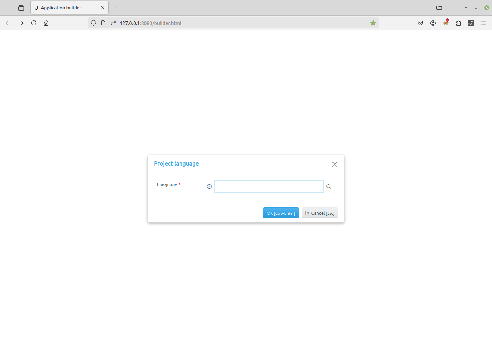
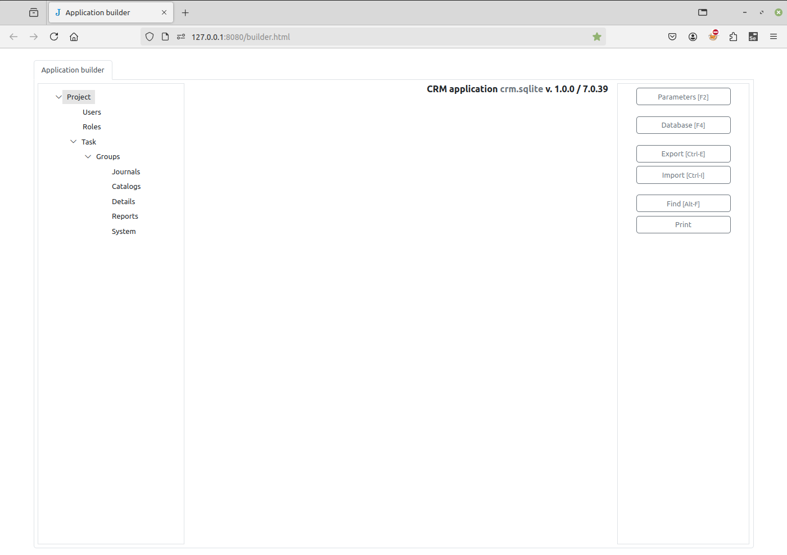

Creating a project¶
Create a new directory.
Go into the directory and run from command line:
$ jam-project.py
The following files and folders will be created in the directory:
/
css/
js/
img/
reports/
static/
admin.sqlite
server.py
index.html
wsgi.py
To start the Jam.py web server, run the server.py script.
$ ./server.py
Note
You can specify a port as parameter, for example
$ ./server.py 8081
By default, the port is 8080. If you specify another port, you need to use it in your browser in the next steps.
Open a Web browser and go to “/builder.html” on your local domain – e.g.:
127.0.0.1:8080/builder.html
You should see the language selection dialog. This defines the language used for the user interface. You can select the language from the list of default languages, or import your own, using the “folder” icon to the right of the input field. See the Language support page for more information. Select your language and press the OK button.
Next is the new project dialog. Fill in:
Caption - the project name that will appear to users.
Name - the name of project (task) that will be used in the code (Python or JS) to get access to the task object. This should be a short and valid python identifier. This name is also used as a prefix when creating a table in the project database.
DB type - select a database type. If the database is not Sqlite, it must be created in advance and its attributes should be entered in the corresponding form fields. To see examples of Database setup, follow the link.
When you press OK, the connection to the database will be checked, and in case of failure an error message will be displayed.
Note
Please note the following requirements:
To use a FireBird database, the python
fdblibrary must be installed.PostgreSQL requires the
psycopg2library.MySQL requires the
MySQLdblibrary.Oracle requires the
cx_Oraclelibrary.MSSQL requires the
pymssqllibrary.To generate reports, LibreOffice must be installed.
Note
For a SQLite database, when an item field is deleted or renamed, or foreign key is created, Application builder, creates a new table and copies records from the old one into it.
For SQLite database, Jam.py doesn’t support importing of metadata into an existing project (project with tables in the database). You can only import metadata into a new project.
If all goes well, a new project will be created and the project tree will appear in the Application builder.
Now, to see the project itself, create a new page in the browser and type in the address bar:
127.0.0.1:8080